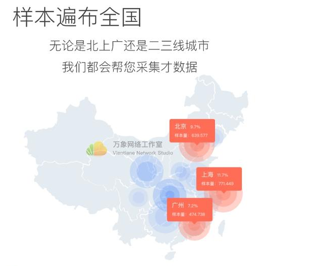
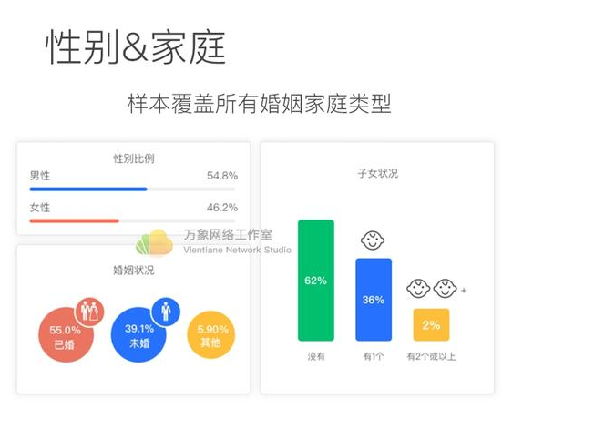
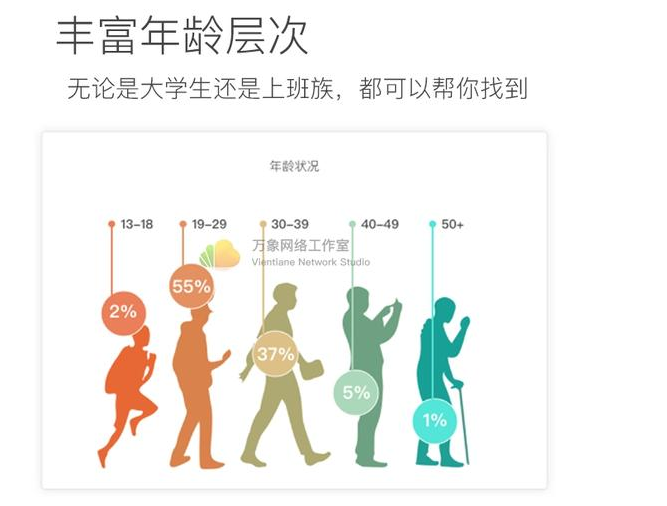
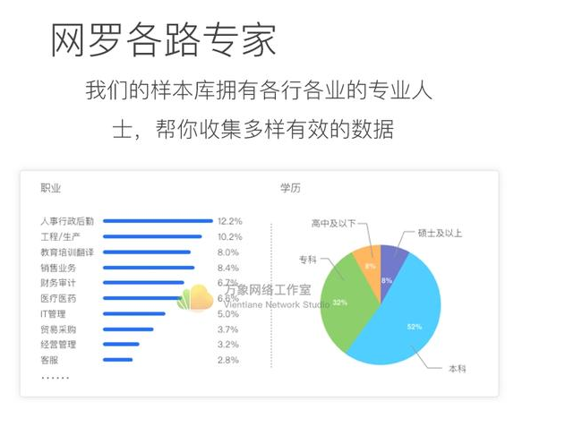

网络问卷代填-样本收集-数据采集服务QQ1564799566
我公司面向学生/教师/市场调查公司承接问卷样本收集服务, 替您发放问卷, 快速收集数据。
如果您没有时间和精力填写调查问卷，我们有专业人员帮您处理。
我们的服务宗旨是
保证真人填写调查问卷，保证每份独立ip、98%的有效问卷
保证数据质量, 信度太低可以免费重新填
可根据您的需求指定城市、人群性别、职业等
专业问卷设计师设计调查问卷
定价需联系客服，客服会根据问卷难度、指定要求（城市、性别等）、问卷题数等进行定价，谢谢您的配合！
根据您的不同需求，我们的工作人员将会投放您的调查问卷，一般一天内可以收集一千份以内的数据
我们能做到其它家店做不到的
【官方权威证明】我们是市面上具有广泛知名度的调研平台，和问卷星、问卷网齐名，可出具带公章的《数据保真认定书》，附加在论文里作为数据来源证明非常有用（快递费用自理）；
【地理定位及按指定样本属性投放】能按地域及特定样本属性进行投放；
【能提供电子档原始答卷文件】可作为原始数据来源证明；
【答卷可追溯、可分多轮投放】前后两份问卷数据可衔接，可指定投放，样本唯一性保证；
【多样化的任务类型】语音访谈、在线投票、营销触达、社交转发，我们有庞大流量，可为各类任务导流；
【可开具正规增值税发票】开票要加收税费，快递费用自理；
【数据有效性保障】针对您最关心的数据有效性，我们的解决方案如下：
我们样本库来源多样，分别来自我们自有平台和APP的400万注册用户、我们旗下微信调研联盟接入的数百个公众号的总计50万名粉丝、与我们合作的专业调研机构（如爱调研、第一调查、GMO、中岸联盟等）的庞大专业样本库，可根据问卷的投放要求灵活选择，基本能满足绝大多数问卷的投放要求；
问卷发布时可设定逻辑陷阱，系统智能判卷，答案矛盾的答卷自动作废不占费用；
所有答题用户都有信用值，会优先选择信用值高的用户进行投放；一旦信用值过低，该用户将会失去答题资格，因此在您投放时选取的样本都已经是历史过滤出来的高信用样本；
在线语音验真，可直接和答卷人在线交流，代替传统的电话回访，接通率更高（该功能将于近期上线）；
回收中的问卷您随时可监控进度和质量，分析信度和效度；
若对结果不满意，您可随时终止该问卷，剩余的费用会返还；
服务简介



